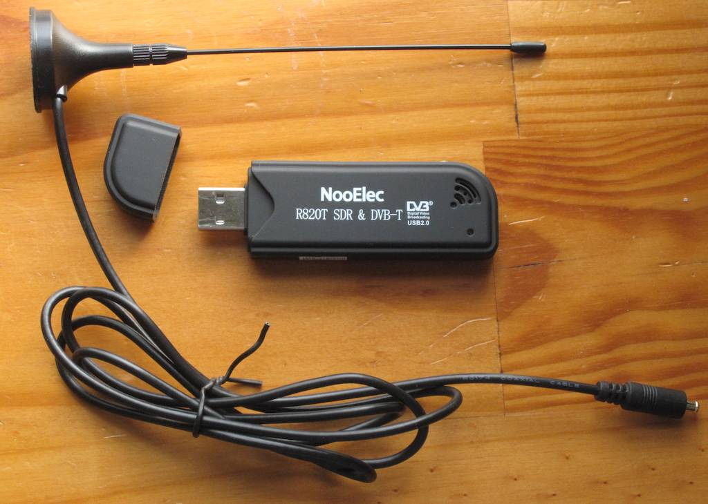
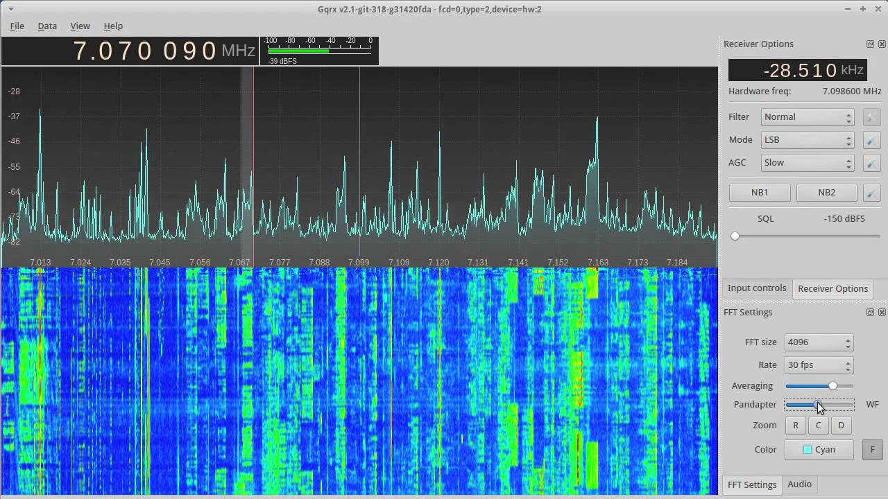
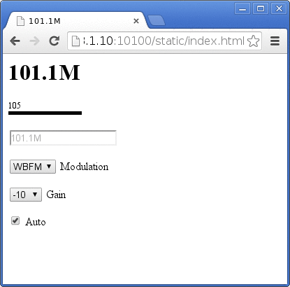
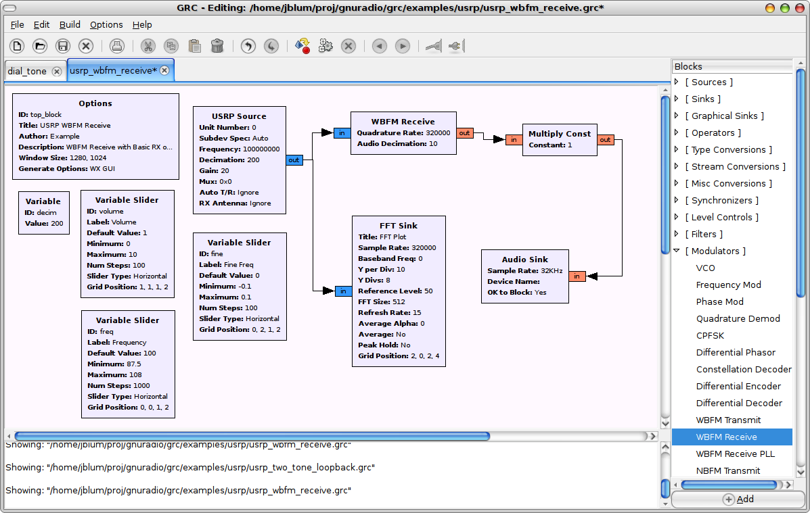
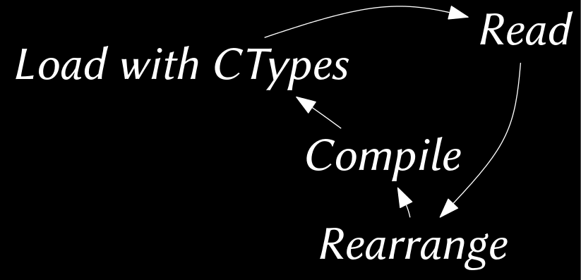

T M Winningham
July 27, 2014

“RTL-SDR is a very cheap software defined radio that uses a DVB-T TV tuner dongle based on the RTL2832U chipset.”
rtl-sdr.com
radiohobbyist.org
Digital sampling or synthesis of electromagnetic radation using software at a specific center frequency and again 90° out of phase, allowing for variable modes and bandwith
European Standard for broadcast digital terrestrial television

Command line tools
Raw data, device testing, network sharing
Audio or digital signals, spectrum scanning, aircraft tracking


RTL_FM
rtl_fm -M wbfm -f 101.1M - |aplay -r 32000 -f S16_LE -t raw -c 1 void usb_demod(struct demod_state *fm)
{
int i, pcm;
int16_t *lp = fm->lowpassed;
int16_t *r = fm->result;
for (i = 0; i < fm->lp_len; i += 2) {
pcm = lp[i] + lp[i+1];
r[i/2] = (int16_t)pcm * fm->output_scale;
}
fm->result_len = fm->lp_len/2;
}some_type some_function (some_type some_parameter) {
do_a_bunch_of_stuff(some_parameter);
do_more_stuff();
do_stuff_i_dont_understand();
finish_up();
}to:
some_type some_new_function(){
do_more_stuff();
}gcc -I /usr/include/libusb-1.0
-I ./convenience/
-I ./getopt
-shared
-Wl,-soname,rtl_fm_python
-o rtl_fm_python.so
-fPIC
rtl_fm_python.c
convenience/convenience.c getopt/getopt.c
-lrtlsdr
uint32_t lib_get_frequency(){
return controller.freqs[controller.freq_now];
}fm = ctypes.CDLL('./rtl_fm_python.so')
get_s_level = fm.lib_get_s_level
get_frequency = fm.lib_get_frequency
set_demod_fm = fm.lib_set_demod_fm
set_demod_wbfm = fm.lib_set_demod_wbfm
set_demod_am = fm.lib_set_demod_am
set_demod_lsb = fm.lib_set_demod_lsb
set_demod_usb = fm.lib_set_demod_usb
set_demod_raw = fm.lib_set_demod_raw
set_frequency = lambda f : fm.lib_set_frequency(ctypes.c_uint32(f))
set_squelch = lambda l : fm.lib_set_squelch_level(ctypes.c_int(l))
get_demod = lambda : chr(fm.lib_get_demod_mode())
str_to_freq = fm.lib_frequency_convert